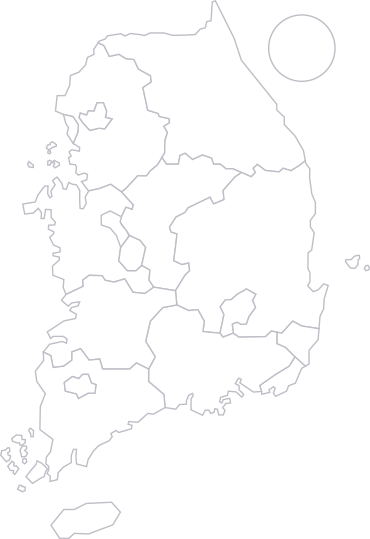
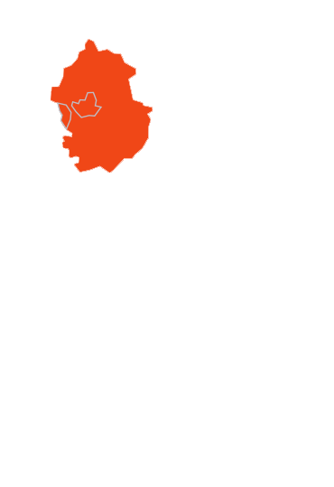
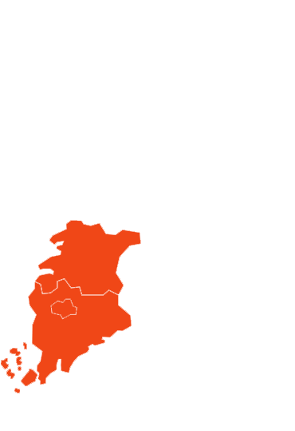

✨ 대한민국 방방곡곡
전통과 힐링이 머무는 아름다운 여정
서울·경기부터 제주까지, 6대 권역별 맞춤형 테마 여행 코스를 지도에서 확인하고 특별한 회원 할인 혜택으로 예약해보세요.
📍 6대 권역 인터랙티브 지도
지도의 지역을 클릭하거나 아래 버튼을 눌러보세요





서울·경기부터 제주까지, 6대 권역별 맞춤형 테마 여행 코스를 지도에서 확인하고 특별한 회원 할인 혜택으로 예약해보세요.


